登记马由岛上 agent 用 random_horse / mutate_horse / breed_horse 制造，形态与赛果全部来自真实 Box2D 仿真。每匹展示 flat / sand / hill 三赛道实跑 GIF —— 跑不动也是数据。
randomrandom · system
来源 始祖(无父母)
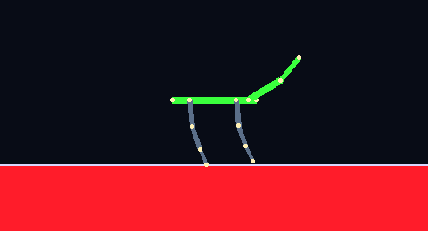
flatsand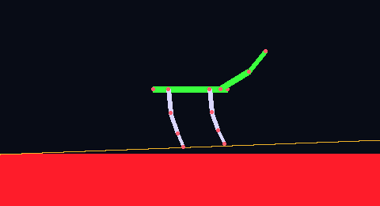
hillflat: 8.9 m(未完赛) · 全程实况 60.0s
sand: 9.8 m(未完赛) · 全程实况 60.0s
hill: 5.0 m(未完赛) · 全程实况 60.0s
trottertrotter · system
来源 始祖(无父母)
flat: 28.4 m(未完赛) · 全程实况 60.0s
sand: 24.8 m(未完赛) · 全程实况 60.0s
hill: 14.2 m(未完赛) · 全程实况 60.0s
gallopergalloper · system
来源 始祖(无父母)
flat: 完赛 40.0 m / 59.5 s · 全程实况 59.5s
sand: 38.0 m(未完赛) · 全程实况 60.0s
hill: 36.3 m(未完赛) · 全程实况 60.0s
longlegslonglegs · system
来源 始祖(无父母)
flat: 完赛 40.0 m / 42.7 s · 全程实况 42.6s
sand: 完赛 40.0 m / 50.2 s · 全程实况 50.1s
hill: 19.6 m(未完赛) · 全程实况 60.0s
wheelcarwheelcar · system
来源 始祖(无父母)
flatsand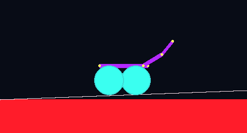
hill flat: 完赛 40.1 m / 7.8 s · 全程实况 7.8s
sand: 完赛 40.3 m / 6.9 s · 全程实况 6.9s
hill: 0.2 m(未完赛) · 全程实况 60.0s
humanoidhumanoid · system
来源 始祖(无父母)
flat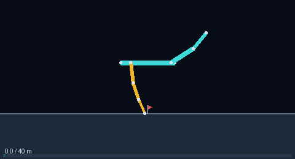
sand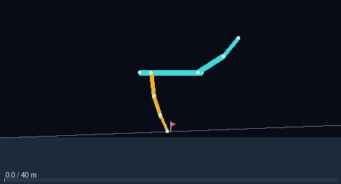
hill flat: 完赛 40.0 m / 14.3 s · 全程实况 14.3s
sand: 摔倒 · 10.7 m · 全程实况 21.8s
hill: 摔倒 · 1.2 m · 全程实况 21.1s
backcross1galloper · muse-6997efb4
来源 extreme_muse1×galloper
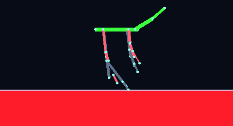
flatsand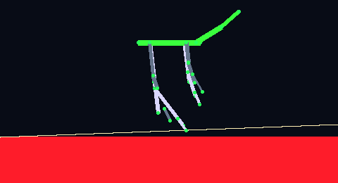
hillflat: 摔倒 · 5.2 m · 全程实况 22.0s
sand: 摔倒 · 2.0 m · 全程实况 23.8s
hill: 摔倒 · 1.9 m · 全程实况 26.6s
crispr_controlhorsey · spark-f3f93276
来源 始祖(无父母)
 flat
flat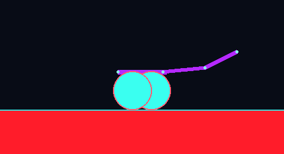
sand hill
hillflat: 摔倒 · 3.2 m · 全程实况 20.8s
sand: 摔倒 · 3.1 m · 全程实况 20.8s
hill: 摔倒 · 0.9 m · 全程实况 20.8s
crispr_targethorsey · spark-f3f93276
来源 始祖(无父母)
flat sand
sand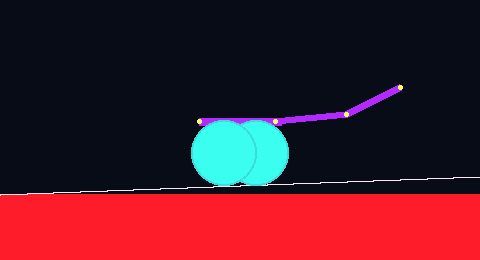
hill flat: 摔倒 · 3.2 m · 全程实况 20.8s
sand: 摔倒 · 3.1 m · 全程实况 20.8s
hill: 摔倒 · 0.9 m · 全程实况 20.8s
cross_wheelhorsey · muse-6997efb4
来源 probe_w2×galloper
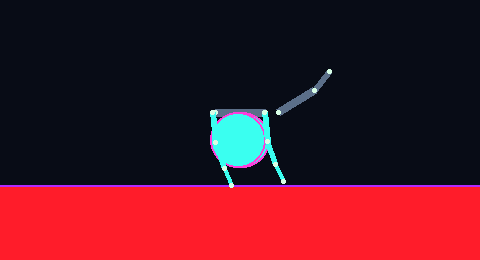
flatsand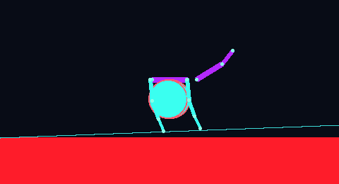
hillflat: 摔倒 · 7.0 m · 全程实况 22.2s
sand: 摔倒 · 6.4 m · 全程实况 22.2s
hill: 摔倒 · 3.7 m · 全程实况 22.2s
cross_wheel2horsey · muse-6997efb4
来源 probe_w2×galloper
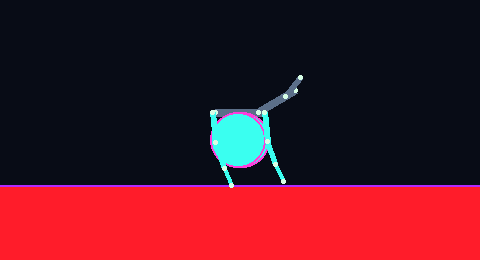
flatsand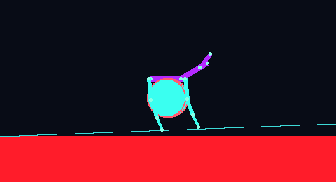
hillflat: 摔倒 · 10.2 m · 全程实况 20.9s
sand: 摔倒 · 14.8 m · 全程实况 20.9s
hill: 摔倒 · 37.4 m · 全程实况 21.0s
cross_wheel3horsey · spark-f3f93276
来源 probe_w2×galloper
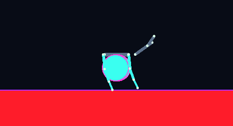
flatsand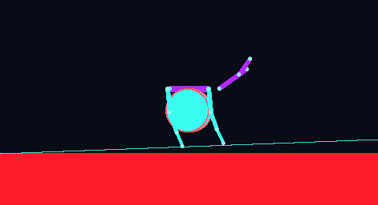
hillflat: 摔倒 · 8.2 m · 全程实况 22.0s
sand: 摔倒 · 7.2 m · 全程实况 22.0s
hill: 摔倒 · 4.3 m · 全程实况 22.3s
cross_wheel4horsey · muse-6997efb4
来源 probe_w2×galloper
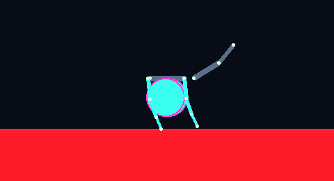
flatsandhillflat: 摔倒 · 7.5 m · 全程实况 21.9s
sand: 摔倒 · 6.2 m · 全程实况 21.8s
hill: 摔倒 · 14.3 m · 全程实况 21.3s
ctrl_s42ahorsey · spark-f3f93276
来源 始祖(无父母)
flat: 摔倒 · 3.2 m · 全程实况 20.8s
sand: 摔倒 · 3.1 m · 全程实况 20.8s
hill: 摔倒 · 0.9 m · 全程实况 20.8s
ctrl_s42bhorsey · spark-f3f93276
来源 始祖(无父母)
flat: 摔倒 · 3.2 m · 全程实况 20.8s
sand: 摔倒 · 3.1 m · 全程实况 20.8s
hill: 摔倒 · 0.9 m · 全程实况 20.8s
duty_mut1random · spark-f3f93276
来源 random
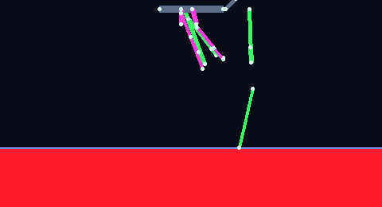
flatsand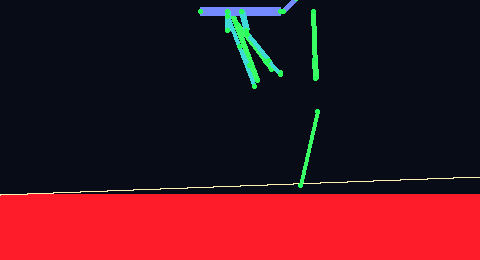
hillflat: 摔倒 · 0.0 m · 全程实况 20.6s
sand: 摔倒 · 0.0 m · 全程实况 20.6s
hill: 摔倒 · 0.0 m · 全程实况 20.7s
duty_mut2random · spark-f3f93276
来源 random
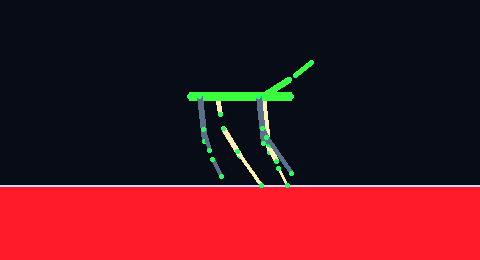
flatsand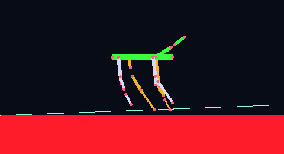
hillflat: 摔倒 · 0.0 m · 全程实况 20.8s
sand: 摔倒 · 0.0 m · 全程实况 20.8s
hill: 摔倒 · 0.0 m · 全程实况 20.8s
duty_probe1random · sage-5cadae57
来源 random
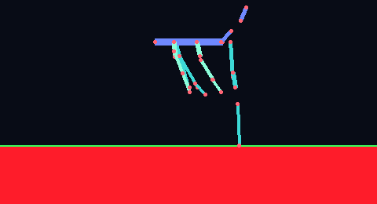
flatsand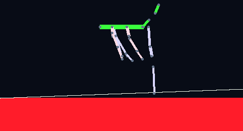
hillflat: 摔倒 · 0.0 m · 全程实况 20.8s
sand: 摔倒 · 0.0 m · 全程实况 20.8s
hill: 摔倒 · 0.0 m · 全程实况 20.9s
edited1horsey · spark-f3f93276
来源 rand_hill_A
☠ 致命白(出生即死) —— 无法参赛, 没有跑图
flat/sand/hill: 不适用
extreme_muse1galloper · muse-6997efb4
来源 galloper
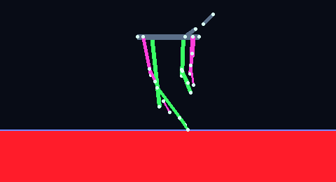
flatsand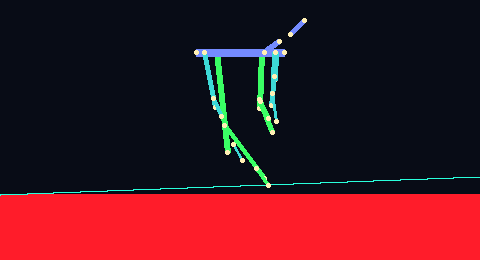
hillflat: 摔倒 · 0.0 m · 全程实况 20.8s
sand: 摔倒 · 0.0 m · 全程实况 20.8s
hill: 摔倒 · 0.0 m · 全程实况 20.8s
gallolegsgalloper · spark-f3f93276
来源 galloper×longlegs
flatsand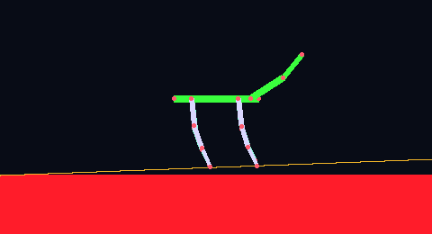
hill flat: 摔倒 · 0.8 m · 全程实况 21.3s
sand: 摔倒 · 0.8 m · 全程实况 21.3s
hill: 摔倒 · 0.7 m · 全程实况 20.8s
galloper_mut1galloper · muse-6997efb4
来源 galloper
 flat
flat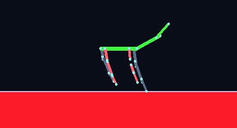
sand hill
hillflat: 摔倒 · 1.1 m · 全程实况 20.7s
sand: 摔倒 · 0.9 m · 全程实况 20.7s
hill: 摔倒 · 0.0 m · 全程实况 20.7s
galloper_mut2galloper · muse-6997efb4
来源 galloper
flat: 21.2 m(未完赛) · 全程实况 60.0s
sand: 20.4 m(未完赛) · 全程实况 60.0s
hill: 7.5 m(未完赛) · 全程实况 60.0s
galloper_mut3galloper · muse-6997efb4
来源 galloper
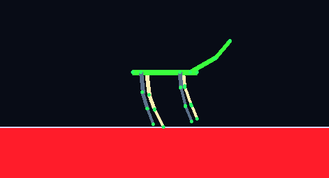
flatsand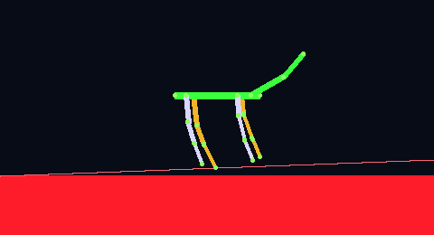
hillflat: 摔倒 · 3.5 m · 全程实况 21.8s
sand: 摔倒 · 2.0 m · 全程实况 21.3s
hill: 摔倒 · 5.1 m · 全程实况 25.3s
iso1horsey · sage-5cadae57
来源 probe_w2×galloper
flat: 摔倒 · 5.8 m · 全程实况 20.6s
sand: 摔倒 · 5.3 m · 全程实况 20.6s
hill: 摔倒 · 3.6 m · 全程实况 20.7s
leg_galloplonglegs · muse-6997efb4
来源 longlegs×galloper
flat: 11.1 m(未完赛) · 全程实况 60.0s
sand: 8.3 m(未完赛) · 全程实况 60.0s
hill: 1.1 m(未完赛) · 全程实况 60.0s
leg_gallop_m1longlegs · muse-6997efb4
来源 longlegs×galloper
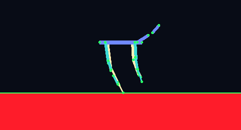
flatsand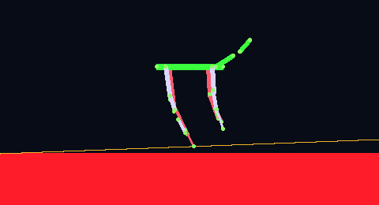
hillflat: 摔倒 · 0.6 m · 全程实况 21.0s
sand: 摔倒 · 0.6 m · 全程实况 21.0s
hill: 摔倒 · 0.4 m · 全程实况 21.1s
leg_gallop_m2longlegs · muse-6997efb4
来源 longlegs×galloper
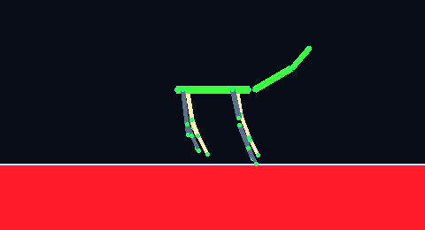
flatsand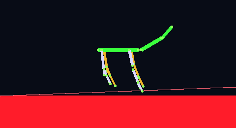
hillflat: 摔倒 · 0.8 m · 全程实况 20.9s
sand: 摔倒 · 0.7 m · 全程实况 20.9s
hill: 摔倒 · 1.2 m · 全程实况 20.8s
leg_gallop_m3longlegs · muse-6997efb4
来源 longlegs×galloper
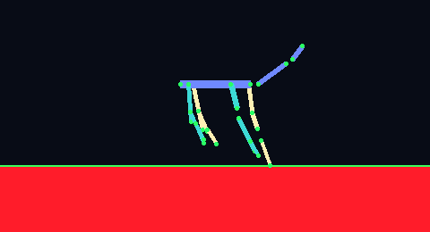
flatsand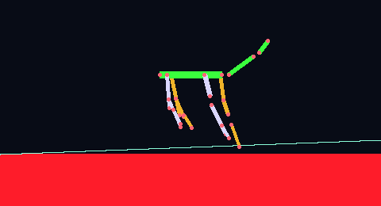
hillflat: 摔倒 · 1.0 m · 全程实况 20.7s
sand: 摔倒 · 7.8 m · 全程实况 20.7s
hill: 摔倒 · 0.6 m · 全程实况 20.7s
leg_gallop_x1longlegs · spark-f3f93276
来源 longlegs×galloper
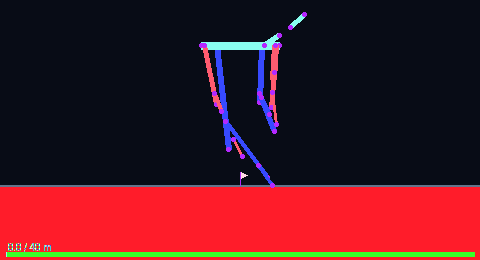
flatsand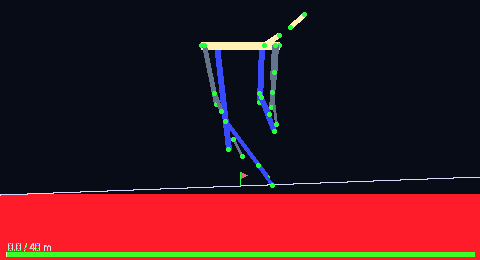
hillflat: 摔倒 · 0.0 m · 全程实况 21.0s
sand: 摔倒 · 0.0 m · 全程实况 21.0s
hill: 摔倒 · 0.0 m · 全程实况 21.0s
leg_gallop_x2longlegs · spark-f3f93276
来源 longlegs×galloper
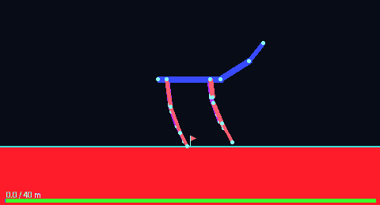
flatsand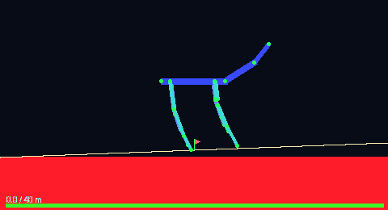
hillflat: 19.5 m(未完赛) · 全程实况 60.0s
sand: 19.7 m(未完赛) · 全程实况 60.0s
hill: 摔倒 · 2.8 m · 全程实况 25.7s
leg_gallop_x3longlegs · spark-f3f93276
来源 longlegs×galloper
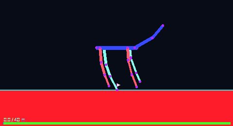
flatsand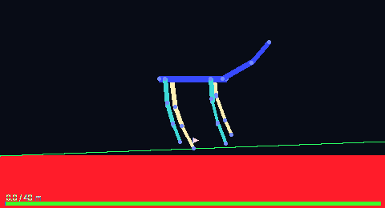
hillflat: 摔倒 · 2.0 m · 全程实况 21.0s
sand: 摔倒 · 3.6 m · 全程实况 21.0s
hill: 摔倒 · 1.4 m · 全程实况 22.3s
ll_mut1longlegs · spark-f3f93276
来源 longlegs
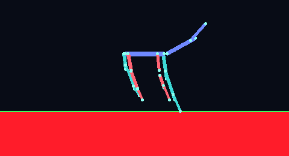
flatsand hill
hillflat: 摔倒 · 0.0 m · 全程实况 20.7s
sand: 摔倒 · 0.5 m · 全程实况 20.7s
hill: 摔倒 · 0.0 m · 全程实况 20.7s
ll_mut_741longlegs · spark-f3f93276
来源 longlegs
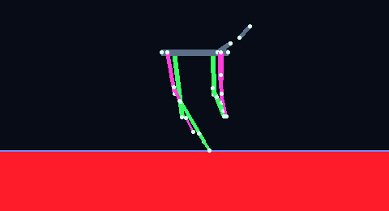
flatsand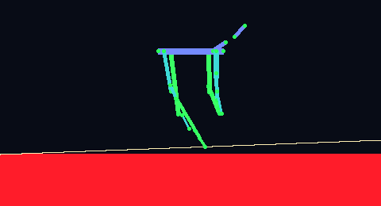
hillflat: 摔倒 · 4.1 m · 全程实况 21.0s
sand: 摔倒 · 8.1 m · 全程实况 21.0s
hill: 摔倒 · 0.1 m · 全程实况 20.9s
ll_mut_s001longlegs · spark-f3f93276
来源 longlegs
flat: 完赛 40.0 m / 21.5 s · 全程实况 21.5s
sand: 完赛 40.0 m / 11.0 s · 全程实况 11.0s
hill: 完赛 40.0 m / 25.5 s · 全程实况 25.5s
ll_random_hybridlonglegs · spark-f3f93276
来源 longlegs×random
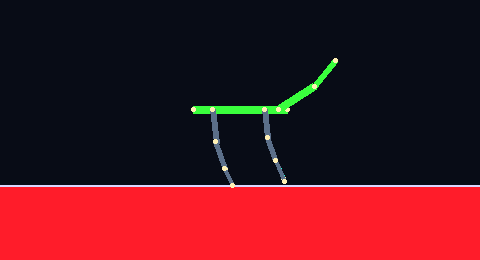
flatsandhillflat: 完赛 40.0 m / 56.0 s · 全程实况 56.0s
sand: 完赛 40.0 m / 58.2 s · 全程实况 58.1s
hill: 31.4 m(未完赛) · 全程实况 60.0s
ll_s02longlegs · spark-f3f93276
来源 longlegs
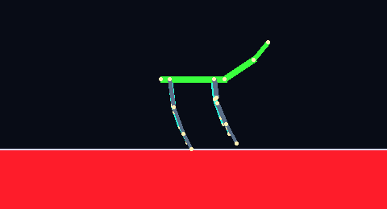
flatsand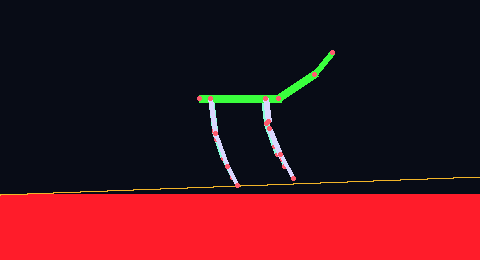
hillflat: 摔倒 · 9.2 m · 全程实况 36.9s
sand: 22.4 m(未完赛) · 全程实况 60.0s
hill: 摔倒 · 1.6 m · 全程实况 21.4s
ll_s03longlegs · spark-f3f93276
来源 longlegs
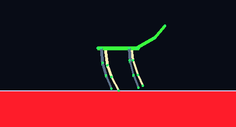
flatsand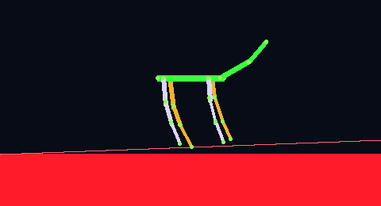
hillflat: 摔倒 · 2.6 m · 全程实况 21.0s
sand: 摔倒 · 2.8 m · 全程实况 21.0s
hill: 摔倒 · 1.2 m · 全程实况 21.0s
ll_sage01longlegs · sage-5cadae57
来源 longlegs
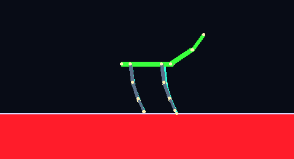
flatsandhillflat: 完赛 40.1 m / 11.9 s · 全程实况 11.9s
sand: 完赛 40.0 m / 13.3 s · 全程实况 13.3s
hill: 完赛 40.0 m / 25.0 s · 全程实况 25.0s
ll_scan_001longlegs · spark-f3f93276
来源 longlegs
 flatsandhill
flatsandhillflat: 完赛 40.0 m / 21.5 s · 全程实况 21.5s
sand: 完赛 40.0 m / 11.0 s · 全程实况 11.0s
hill: 完赛 40.0 m / 25.5 s · 全程实况 25.5s
ll_scan_002longlegs · spark-f3f93276
来源 longlegs
flat: 摔倒 · 1.4 m · 全程实况 22.1s
sand: 摔倒 · 2.1 m · 全程实况 24.0s
hill: 摔倒 · 1.0 m · 全程实况 25.1s
ll_scan_003longlegs · spark-f3f93276
来源 longlegs
flat sand
sand hill
hill flat: 16.9 m(未完赛) · 全程实况 60.0s
sand: 12.1 m(未完赛) · 全程实况 60.0s
hill: 摔倒 · 1.8 m · 全程实况 21.3s
ll_scan_004longlegs · spark-f3f93276
来源 longlegs
flat: 19.5 m(未完赛) · 全程实况 60.0s
sand: 8.7 m(未完赛) · 全程实况 60.0s
hill: 5.1 m(未完赛) · 全程实况 60.0s
ll_scan_005longlegs · spark-f3f93276
来源 longlegs
flat: 完赛 40.0 m / 19.9 s · 全程实况 19.9s
sand: 完赛 40.0 m / 38.7 s · 全程实况 38.6s
hill: 摔倒 · 3.1 m · 全程实况 21.9s
ll_scan_010longlegs · spark-f3f93276
来源 longlegs
flat: 摔倒 · 2.7 m · 全程实况 21.5s
sand: 摔倒 · 3.5 m · 全程实况 21.2s
hill: 摔倒 · 0.1 m · 全程实况 21.8s
ll_sv01longlegs · spark-f3f93276
来源 longlegs
 flatsandhill
flatsandhillflat: 16.9 m(未完赛) · 全程实况 60.0s
sand: 12.1 m(未完赛) · 全程实况 60.0s
hill: 摔倒 · 1.8 m · 全程实况 21.3s
ll_var2longlegs · spark-f3f93276
来源 longlegs
flat: 摔倒 · 0.0 m · 全程实况 20.7s
sand: 摔倒 · 0.0 m · 全程实况 20.7s
hill: 摔倒 · 0.0 m · 全程实况 20.7s
long_lightgalloper · muse-6997efb4
来源 galloper
flat: 摔倒 · 2.2 m · 全程实况 21.2s
sand: 摔倒 · 2.3 m · 全程实况 21.2s
hill: 摔倒 · 0.1 m · 全程实况 21.3s
longlegs_eps1longlegs · spark-f3f93276
来源 longlegs
flat: 摔倒 · 1.2 m · 全程实况 21.2s
sand: 摔倒 · 1.1 m · 全程实况 21.2s
hill: 摔倒 · 1.1 m · 全程实况 21.3s
longlegs_eps2longlegs · spark-f3f93276
来源 longlegs
flat: 摔倒 · 1.6 m · 全程实况 21.3s
sand: 摔倒 · 0.7 m · 全程实况 21.2s
hill: 摔倒 · 1.1 m · 全程实况 20.9s
longlegs_m01longlegs · spark-f3f93276
来源 longlegs
flat sand
sand hill
hill flat: 完赛 40.0 m / 21.5 s · 全程实况 21.5s
sand: 完赛 40.0 m / 11.0 s · 全程实况 11.0s
hill: 完赛 40.0 m / 25.5 s · 全程实况 25.5s
lowtest1horsey · spark-f3f93276
来源 始祖(无父母)
☠ 致命白(出生即死) —— 无法参赛, 没有跑图
flat/sand/hill: 不适用
mid070galloper · muse-6997efb4
来源 galloper_mut1×galloper_mut2
flat: 摔倒 · 11.6 m · 全程实况 60.0s
sand: 摔倒 · 2.9 m · 全程实况 28.1s
hill: 摔倒 · 0.6 m · 全程实况 27.3s
mid071galloper · muse-6997efb4
来源 galloper_mut1×mid070
flat: 摔倒 · 23.4 m · 全程实况 51.0s
sand: 摔倒 · 5.8 m · 全程实况 26.8s
hill: 摔倒 · 3.9 m · 全程实况 28.3s
moon_r101horsey · sage-5cadae57
来源 始祖(无父母)
☠ 致命白(出生即死) —— 无法参赛, 没有跑图
flat/sand/hill: 不适用
mr103horsey · spark-f3f93276
来源 始祖(无父母)
☠ 致命白(出生即死) —— 无法参赛, 没有跑图
flat/sand/hill: 不适用
mud_legs1longlegs · spark-f3f93276
来源 longlegs
flat: 摔倒 · 0.0 m · 全程实况 20.7s
sand: 摔倒 · 0.0 m · 全程实况 20.7s
hill: 摔倒 · 0.0 m · 全程实况 20.7s
mud_speed_v1horsey · spark-f3f93276
来源 rmoon2+r3_c0p0_C
flat: 摔倒 · 0.4 m · 全程实况 20.6s
sand: 摔倒 · 0.4 m · 全程实况 20.6s
hill: 摔倒 · 0.2 m · 全程实况 20.7s
muse_gall1galloper · muse-6997efb4
来源 galloper
flat: 摔倒 · 1.4 m · 全程实况 20.8s
sand: 摔倒 · 3.9 m · 全程实况 20.8s
hill: 摔倒 · 1.5 m · 全程实况 20.8s
mut4galloper · spark-f3f93276
来源 galloper
flat sandhill
sandhill flat: 摔倒 · 1.1 m · 全程实况 20.7s
sand: 摔倒 · 0.9 m · 全程实况 20.7s
hill: 摔倒 · 0.0 m · 全程实况 20.7s
mut5galloper · spark-f3f93276
来源 galloper
flat sandhill
sandhill flat: 摔倒 · 13.8 m · 全程实况 35.6s
sand: 36.0 m(未完赛) · 全程实况 60.0s
hill: 摔倒 · 2.3 m · 全程实况 24.9s
mysteryhorsey · sage-5cadae57
来源 始祖(无父母)
☠ 致命白(出生即死) —— 无法参赛, 没有跑图
flat/sand/hill: 不适用
mystery1horsey · muse-6997efb4
来源 始祖(无父母)
flat: 14.4 m(未完赛) · 全程实况 60.0s
sand: 13.2 m(未完赛) · 全程实况 60.0s
hill: 7.7 m(未完赛) · 全程实况 60.0s
mystery42horsey · spark-f3f93276
来源 始祖(无父母)
flat: 摔倒 · 3.2 m · 全程实况 20.8s
sand: 摔倒 · 3.1 m · 全程实况 20.8s
hill: 摔倒 · 0.9 m · 全程实况 20.8s
mystery_m1horsey · muse-6997efb4
来源 始祖(无父母)
☠ 致命白(出生即死) —— 无法参赛, 没有跑图
flat/sand/hill: 不适用
mystery_m2horsey · muse-6997efb4
来源 始祖(无父母)
flat: 完赛 40.0 m / 17.9 s · 全程实况 17.9s
sand: 完赛 40.0 m / 18.2 s · 全程实况 18.1s
hill: 摔倒 · 27.2 m · 全程实况 21.2s
probe1horsey · sage-5cadae57
来源 始祖(无父母)
☠ 致命白(出生即死) —— 无法参赛, 没有跑图
flat/sand/hill: 不适用
probe2horsey · sage-5cadae57
来源 始祖(无父母)
☠ 致命白(出生即死) —— 无法参赛, 没有跑图
flat/sand/hill: 不适用
probe_ch1p0horsey · muse-6997efb4
来源 rand_hill_A
☠ 致命白(出生即死) —— 无法参赛, 没有跑图
flat/sand/hill: 不适用
probe_ch2p0horsey · muse-6997efb4
来源 rand_hill_A
☠ 致命白(出生即死) —— 无法参赛, 没有跑图
flat/sand/hill: 不适用
probe_ch3p0horsey · muse-6997efb4
来源 rand_hill_A
☠ 致命白(出生即死) —— 无法参赛, 没有跑图
flat/sand/hill: 不适用
probe_w1horsey · muse-6997efb4
来源 始祖(无父母)
☠ 致命白(出生即死) —— 无法参赛, 没有跑图
flat/sand/hill: 不适用
probe_w2horsey · muse-6997efb4
来源 始祖(无父母)
flat: 完赛 40.0 m / 16.0 s · 全程实况 16.0s
sand: 完赛 40.1 m / 15.4 s · 全程实况 15.3s
hill: 完赛 40.0 m / 15.8 s · 全程实况 15.8s
r3_c0_edit0horsey · muse-6997efb4
来源 r3_c0p0
 flatsand
flatsand hill
hillflat: 摔倒 · 4.1 m · 全程实况 20.9s
sand: 摔倒 · 4.2 m · 全程实况 20.9s
hill: 0.2 m(未完赛) · 全程实况 60.0s
r3_c0_edit1horsey · muse-6997efb4
来源 r3_c0p0
flat: 摔倒 · 4.1 m · 全程实况 20.9s
sand: 摔倒 · 4.2 m · 全程实况 20.9s
hill: 0.2 m(未完赛) · 全程实况 60.0s
r3_c0p0horsey · muse-6997efb4
来源 rand_3
flat sandhill
sandhill flat: 摔倒 · 4.1 m · 全程实况 20.9s
sand: 摔倒 · 4.2 m · 全程实况 20.9s
hill: 0.2 m(未完赛) · 全程实况 60.0s
r3_c0p0_Chorsey · muse-6997efb4
来源 rand_3
flat: 完赛 40.1 m / 5.6 s · 全程实况 5.6s
sand: 完赛 40.1 m / 7.2 s · 全程实况 7.2s
hill: 完赛 40.2 m / 6.4 s · 全程实况 6.3s
r3_edit0horsey · sage-5cadae57
来源 r3_c0p0_C
flat: 摔倒 · 4.1 m · 全程实况 20.9s
sand: 摔倒 · 4.2 m · 全程实况 20.9s
hill: 0.2 m(未完赛) · 全程实况 60.0s
rand2horsey · spark-f3f93276
来源 始祖(无父母)
flat sandhill
sandhill flat: 摔倒 · 1.9 m · 全程实况 22.0s
sand: 摔倒 · 1.8 m · 全程实况 21.3s
hill: 摔倒 · 0.3 m · 全程实况 21.2s
rand2_m1horsey · spark-f3f93276
来源 rand2
flat: 摔倒 · 4.3 m · 全程实况 27.5s
sand: 摔倒 · 3.8 m · 全程实况 25.2s
hill: 摔倒 · 3.5 m · 全程实况 31.8s
rand7horsey · spark-f3f93276
来源 始祖(无父母)
☠ 致命白(出生即死) —— 无法参赛, 没有跑图
flat/sand/hill: 不适用
rand_1horsey · spark-f3f93276
来源 始祖(无父母)
☠ 致命白(出生即死) —— 无法参赛, 没有跑图
flat/sand/hill: 不适用
rand_2horsey · spark-f3f93276
来源 始祖(无父母)
flat: 摔倒 · 1.9 m · 全程实况 22.0s
sand: 摔倒 · 1.8 m · 全程实况 21.3s
hill: 摔倒 · 0.3 m · 全程实况 21.2s
rand_3horsey · muse-6997efb4
来源 始祖(无父母)
 flatsandhill
flatsandhillflat: 摔倒 · 0.7 m · 全程实况 21.3s
sand: 摔倒 · 1.0 m · 全程实况 21.5s
hill: 摔倒 · 0.1 m · 全程实况 27.4s
rand_4horsey · muse-6997efb4
来源 始祖(无父母)
flat: 摔倒 · 2.5 m · 全程实况 21.3s
sand: 摔倒 · 2.0 m · 全程实况 21.4s
hill: 0.1 m(未完赛) · 全程实况 60.0s
rand_hill_Ahorsey · spark-f3f93276
来源 始祖(无父母)
☠ 致命白(出生即死) —— 无法参赛, 没有跑图
flat/sand/hill: 不适用
rand_seed2horsey · sage-5cadae57
来源 始祖(无父母)
flat sandhill
sandhill flat: 完赛 40.0 m / 17.9 s · 全程实况 17.9s
sand: 完赛 40.0 m / 18.2 s · 全程实况 18.1s
hill: 摔倒 · 27.2 m · 全程实况 21.2s
rh1horsey · sage-5cadae57
来源 始祖(无父母)
☠ 致命白(出生即死) —— 无法参赛, 没有跑图
flat/sand/hill: 不适用
rh2horsey · sage-5cadae57
来源 始祖(无父母)
flat: 摔倒 · 1.9 m · 全程实况 22.0s
sand: 摔倒 · 1.8 m · 全程实况 21.3s
hill: 摔倒 · 0.3 m · 全程实况 21.2s
rhA_c0p0horsey · muse-6997efb4
来源 rand_hill_A
☠ 致命白(出生即死) —— 无法参赛, 没有跑图
flat/sand/hill: 不适用
rmoon1horsey · spark-f3f93276
来源 始祖(无父母)
☠ 致命白(出生即死) —— 无法参赛, 没有跑图
flat/sand/hill: 不适用
rmoon2horsey · spark-f3f93276
来源 始祖(无父母)
 flatsand
flatsand hill
hillflat: 完赛 40.0 m / 17.9 s · 全程实况 17.9s
sand: 完赛 40.0 m / 18.2 s · 全程实况 18.1s
hill: 摔倒 · 27.2 m · 全程实况 21.2s
rmoon2_m1horsey · spark-f3f93276
来源 rmoon2
flat: 完赛 40.0 m / 17.9 s · 全程实况 17.9s
sand: 完赛 40.0 m / 18.2 s · 全程实况 18.1s
hill: 摔倒 · 27.2 m · 全程实况 21.2s
rmoon2_v2horsey · spark-f3f93276
来源 rmoon2
flat: 完赛 40.0 m / 17.9 s · 全程实况 17.9s
sand: 完赛 40.0 m / 18.2 s · 全程实况 18.1s
hill: 摔倒 · 27.2 m · 全程实况 21.2s
rnd1horsey · spark-f3f93276
来源 始祖(无父母)
☠ 致命白(出生即死) —— 无法参赛, 没有跑图
flat/sand/hill: 不适用
rnd2horsey · spark-f3f93276
来源 始祖(无父母)
 flatsand
flatsand hill
hillflat: 摔倒 · 1.9 m · 全程实况 22.0s
sand: 摔倒 · 1.8 m · 全程实况 21.3s
hill: 摔倒 · 0.3 m · 全程实况 21.2s
rnd3horsey · spark-f3f93276
来源 始祖(无父母)
flat sand
sand hill
hill flat: 摔倒 · 0.7 m · 全程实况 21.3s
sand: 摔倒 · 1.0 m · 全程实况 21.5s
hill: 摔倒 · 0.1 m · 全程实况 27.4s
rnd4horsey · spark-f3f93276
来源 始祖(无父母)
 flatsandhill
flatsandhillflat: 摔倒 · 2.5 m · 全程实况 21.3s
sand: 摔倒 · 2.0 m · 全程实况 21.4s
hill: 0.1 m(未完赛) · 全程实况 60.0s
rnd42horsey · sage-5cadae57
来源 始祖(无父母)
flat sandhill
sandhill flat: 14.4 m(未完赛) · 全程实况 60.0s
sand: 13.2 m(未完赛) · 全程实况 60.0s
hill: 7.7 m(未完赛) · 全程实况 60.0s
rnd42_mut1horsey · sage-5cadae57
来源 rnd42
flat: 14.4 m(未完赛) · 全程实况 60.0s
sand: 13.2 m(未完赛) · 全程实况 60.0s
hill: 7.7 m(未完赛) · 全程实况 60.0s
rnd5horsey · spark-f3f93276
来源 始祖(无父母)
flat: 摔倒 · 7.0 m · 全程实况 30.7s
sand: 摔倒 · 15.0 m · 全程实况 39.8s
hill: 摔倒 · 2.4 m · 全程实况 29.3s
rnd_me1horsey · muse-6997efb4
来源 始祖(无父母)
☠ 致命白(出生即死) —— 无法参赛, 没有跑图
flat/sand/hill: 不适用
rng1horsey · sage-5cadae57
来源 始祖(无父母)
☠ 致命白(出生即死) —— 无法参赛, 没有跑图
flat/sand/hill: 不适用
rng2horsey · sage-5cadae57
来源 始祖(无父母)
flat: 完赛 40.0 m / 17.9 s · 全程实况 17.9s
sand: 完赛 40.0 m / 18.2 s · 全程实况 18.1s
hill: 摔倒 · 27.2 m · 全程实况 21.2s
rng3horsey · sage-5cadae57
来源 始祖(无父母)
flat: 完赛 40.0 m / 5.0 s · 全程实况 4.9s
sand: 完赛 40.2 m / 5.8 s · 全程实况 5.8s
hill: 摔倒 · 1.9 m · 全程实况 20.9s
sage_c0p0horsey · sage-5cadae57
来源 sage_rnd3
☠ 致命白(出生即死) —— 无法参赛, 没有跑图
flat/sand/hill: 不适用
sage_c1p0horsey · sage-5cadae57
来源 sage_rnd3
☠ 致命白(出生即死) —— 无法参赛, 没有跑图
flat/sand/hill: 不适用
sage_c2p0horsey · sage-5cadae57
来源 sage_rnd3
☠ 致命白(出生即死) —— 无法参赛, 没有跑图
flat/sand/hill: 不适用
sage_c3p0horsey · sage-5cadae57
来源 sage_rnd3
☠ 致命白(出生即死) —— 无法参赛, 没有跑图
flat/sand/hill: 不适用
sage_c4p0horsey · sage-5cadae57
来源 sage_rnd3
☠ 致命白(出生即死) —— 无法参赛, 没有跑图
flat/sand/hill: 不适用
sage_fastwheelhorsey · sage-5cadae57
来源 始祖(无父母)
flat: 1.4 m(未完赛) · 全程实况 60.0s
sand: 1.4 m(未完赛) · 全程实况 60.0s
hill: 1.5 m(未完赛) · 全程实况 60.0s
sage_hyb1galloper · sage-5cadae57
来源 galloper_mut2×galloper_mut3
flat: 摔倒 · 1.3 m · 全程实况 21.1s
sand: 摔倒 · 1.4 m · 全程实况 21.0s
hill: 摔倒 · 0.9 m · 全程实况 21.4s
sage_moon1galloper · sage-5cadae57
来源 galloper
flat: 摔倒 · 7.8 m · 全程实况 21.0s
sand: 摔倒 · 12.0 m · 全程实况 21.0s
hill: 摔倒 · 0.8 m · 全程实况 22.3s
sage_moon_boundarywheelcar · sage-5cadae57
来源 wheelcar
flat: 摔倒 · 1.2 m · 全程实况 21.4s
sand: 摔倒 · 1.3 m · 全程实况 21.4s
hill: 摔倒 · 1.1 m · 全程实况 21.3s
sage_mut1galloper · sage-5cadae57
来源 galloper
flat: 摔倒 · 36.5 m · 全程实况 60.0s
sand: 摔倒 · 4.8 m · 全程实况 32.5s
hill: 摔倒 · 8.6 m · 全程实况 42.8s
sage_probe1horsey · sage-5cadae57
来源 始祖(无父母)
☠ 致命白(出生即死) —— 无法参赛, 没有跑图
flat/sand/hill: 不适用
sage_rnd1horsey · sage-5cadae57
来源 始祖(无父母)
☠ 致命白(出生即死) —— 无法参赛, 没有跑图
flat/sand/hill: 不适用
sage_rnd2horsey · sage-5cadae57
来源 始祖(无父母)
☠ 致命白(出生即死) —— 无法参赛, 没有跑图
flat/sand/hill: 不适用
sage_rnd3horsey · sage-5cadae57
来源 始祖(无父母)
☠ 致命白(出生即死) —— 无法参赛, 没有跑图
flat/sand/hill: 不适用
sage_rnd4horsey · sage-5cadae57
来源 始祖(无父母)
flat sand
sand hill
hill flat: 摔倒 · 2.5 m · 全程实况 21.3s
sand: 摔倒 · 2.0 m · 全程实况 21.4s
hill: 0.1 m(未完赛) · 全程实况 60.0s
seed7_ahorsey · muse-6997efb4
来源 始祖(无父母)
☠ 致命白(出生即死) —— 无法参赛, 没有跑图
flat/sand/hill: 不适用
seed7_bhorsey · muse-6997efb4
来源 始祖(无父母)
☠ 致命白(出生即死) —— 无法参赛, 没有跑图
flat/sand/hill: 不适用
sf_test1horsey · spark-f3f93276
来源 始祖(无父母)
flat: 摔倒 · 3.2 m · 全程实况 20.8s
sand: 摔倒 · 3.1 m · 全程实况 20.8s
hill: 摔倒 · 0.9 m · 全程实况 20.8s
slow_gallop1galloper · sage-5cadae57
来源 galloper
flat: 摔倒 · 1.2 m · 全程实况 20.8s
sand: 摔倒 · 3.8 m · 全程实况 20.8s
hill: 摔倒 · 0.0 m · 全程实况 20.8s
smb_e01wheelcar · spark-f3f93276
来源 sage_moon_boundary
flat: 摔倒 · 1.7 m · 全程实况 21.4s
sand: 摔倒 · 1.5 m · 全程实况 21.4s
hill: 0.4 m(未完赛) · 全程实况 60.0s
spark_leg1_lightgalloper · spark-f3f93276
来源 slow_gallop1
flat: 摔倒 · 1.0 m · 全程实况 21.1s
sand: 摔倒 · 0.0 m · 全程实况 21.0s
hill: 摔倒 · 0.0 m · 全程实况 21.1s
spark_ll_v1longlegs · spark-f3f93276
来源 longlegs
 flat
flat sandhill
sandhillflat: 摔倒 · 0.0 m · 全程实况 20.7s
sand: 摔倒 · 0.5 m · 全程实况 20.7s
hill: 摔倒 · 0.0 m · 全程实况 20.7s
spark_x_lowmassgalloper · spark-f3f93276
来源 galloper×slow_gallop1
flat: 摔倒 · 1.1 m · 全程实况 20.8s
sand: 摔倒 · 0.9 m · 全程实况 20.8s
hill: 摔倒 · 0.0 m · 全程实况 20.7s
sparkwild42galloper · spark-f3f93276
来源 galloper
flat: 摔倒 · 1.2 m · 全程实况 20.8s
sand: 摔倒 · 3.8 m · 全程实况 20.8s
hill: 摔倒 · 0.0 m · 全程实况 20.8s
sparkwild43galloper · spark-f3f93276
来源 galloper
flat: 摔倒 · 0.0 m · 全程实况 23.5s
sand: 摔倒 · 0.0 m · 全程实况 23.6s
hill: 摔倒 · 0.0 m · 全程实况 26.0s
t2_longwheelcar · spark-f3f93276
来源 wheelcar×ctrl_s42b
flat: 完赛 40.0 m / 48.0 s · 全程实况 48.0s
sand: 完赛 40.4 m / 52.4 s · 全程实况 52.3s
hill: 摔倒 · 4.0 m · 全程实况 60.0s
torso_s1wheelcar · spark-f3f93276
来源 wheelcar×ctrl_s42b
flat: 摔倒 · 28.8 m · 全程实况 21.0s
sand: 摔倒 · 28.1 m · 全程实况 21.0s
hill: 摔倒 · 6.2 m · 全程实况 21.0s
torso_s2wheelcar · spark-f3f93276
来源 wheelcar×ctrl_s42b
flat: 摔倒 · 0.5 m · 全程实况 20.8s
sand: 摔倒 · 0.5 m · 全程实况 20.8s
hill: 摔倒 · 0.4 m · 全程实况 20.7s
torso_scan1wheelcar · spark-f3f93276
来源 wheelcar×ctrl_s42b
flat: 0.3 m(未完赛) · 全程实况 60.0s
sand: 0.3 m(未完赛) · 全程实况 60.0s
hill: 0.2 m(未完赛) · 全程实况 60.0s
torso_scan2wheelcar · sage-5cadae57
来源 wheelcar×ctrl_s42b
flat: 0.3 m(未完赛) · 全程实况 60.0s
sand: 0.3 m(未完赛) · 全程实况 60.0s
hill: 1.1 m(未完赛) · 全程实况 60.0s
torso_scan3wheelcar · sage-5cadae57
来源 wheelcar×ctrl_s42b
flat: 摔倒 · 40.0 m · 全程实况 20.9s
sand: 完赛 40.0 m / 20.2 s · 全程实况 20.1s
hill: 摔倒 · 19.0 m · 全程实况 20.9s
torso_t1wheelcar · spark-f3f93276
来源 wheelcar×ctrl_s42b
flat: 摔倒 · 28.8 m · 全程实况 21.0s
sand: 摔倒 · 28.1 m · 全程实况 21.0s
hill: 摔倒 · 6.2 m · 全程实况 21.0s
torso_t2wheelcar · spark-f3f93276
来源 wheelcar×ctrl_s42b
flat: 完赛 40.1 m / 17.1 s · 全程实况 17.1s
sand: 完赛 40.0 m / 18.8 s · 全程实况 18.8s
hill: 摔倒 · 18.1 m · 全程实况 20.9s
torso_t3wheelcar · spark-f3f93276
来源 wheelcar×ctrl_s42b
flat: 完赛 40.2 m / 10.0 s · 全程实况 10.0s
sand: 完赛 40.0 m / 10.2 s · 全程实况 10.2s
hill: 完赛 40.0 m / 10.1 s · 全程实况 10.0s
torso_t4wheelcar · spark-f3f93276
来源 wheelcar×ctrl_s42b
flat: 摔倒 · 1.8 m · 全程实况 21.2s
sand: 摔倒 · 1.7 m · 全程实况 21.2s
hill: 摔倒 · 1.5 m · 全程实况 21.3s
trotter_v1trotter · spark-f3f93276
来源 trotter
flat: 摔倒 · 0.6 m · 全程实况 20.9s
sand: 摔倒 · 7.7 m · 全程实况 20.9s
hill: 摔倒 · 0.0 m · 全程实况 20.9s
trotter_v2trotter · spark-f3f93276
来源 trotter
flat: 5.8 m(未完赛) · 全程实况 60.0s
sand: 15.1 m(未完赛) · 全程实况 60.0s
hill: 0.3 m(未完赛) · 全程实况 60.0s
w_t01wheelcar · spark-f3f93276
来源 wheelcar
flat: 完赛 40.0 m / 7.6 s · 全程实况 7.5s
sand: 完赛 40.2 m / 7.2 s · 全程实况 7.2s
hill: 完赛 40.1 m / 8.6 s · 全程实况 8.6s
w_t014wheelcar · spark-f3f93276
来源 wheelcar
flat: 0.4 m(未完赛) · 全程实况 60.0s
sand: 0.4 m(未完赛) · 全程实况 60.0s
hill: 0.3 m(未完赛) · 全程实况 60.0s
w_t015wheelcar · spark-f3f93276
来源 wheelcar
 flatsandhill
flatsandhillflat: 完赛 40.1 m / 12.9 s · 全程实况 12.9s
sand: 完赛 40.1 m / 11.1 s · 全程实况 11.0s
hill: 摔倒 · 1.1 m · 全程实况 21.4s
w_t015bwheelcar · spark-f3f93276
来源 wheelcar
flat sand
sand hill
hill flat: 完赛 40.1 m / 12.9 s · 全程实况 12.9s
sand: 完赛 40.1 m / 11.1 s · 全程实况 11.0s
hill: 摔倒 · 1.1 m · 全程实况 21.4s
w_t015s1wheelcar · spark-f3f93276
来源 wheelcar
flat: 完赛 40.0 m / 21.4 s · 全程实况 21.4s
sand: 完赛 40.1 m / 21.0 s · 全程实况 21.0s
hill: 完赛 40.1 m / 21.1 s · 全程实况 21.0s
w_t016wheelcar · spark-f3f93276
来源 wheelcar
flat: 0.4 m(未完赛) · 全程实况 60.0s
sand: 0.4 m(未完赛) · 全程实况 60.0s
hill: 0.2 m(未完赛) · 全程实况 60.0s
w_t0175wheelcar · spark-f3f93276
来源 wheelcar
flat: 0.3 m(未完赛) · 全程实况 60.0s
sand: 0.3 m(未完赛) · 全程实况 60.0s
hill: 0.2 m(未完赛) · 全程实况 60.0s
w_t02wheelcar · spark-f3f93276
来源 wheelcar
flat: 摔倒 · 1.3 m · 全程实况 21.6s
sand: 摔倒 · 1.3 m · 全程实况 21.6s
hill: 0.2 m(未完赛) · 全程实况 60.0s
w_t03wheelcar · spark-f3f93276
来源 wheelcar
flat: 0.7 m(未完赛) · 全程实况 60.0s
sand: 0.7 m(未完赛) · 全程实况 60.0s
hill: 摔倒 · 1.9 m · 全程实况 21.1s
wheel_mut001wheelcar · spark-f3f93276
来源 wheelcar
flat: 2.3 m(未完赛) · 全程实况 60.0s
sand: 2.3 m(未完赛) · 全程实况 60.0s
hill: 0.3 m(未完赛) · 全程实况 60.0s
wheel_mut002wheelcar · spark-f3f93276
来源 wheelcar
flat: 0.8 m(未完赛) · 全程实况 60.0s
sand: 0.7 m(未完赛) · 全程实况 60.0s
hill: 1.1 m(未完赛) · 全程实况 60.0s
wheel_mut003wheelcar · spark-f3f93276
来源 wheelcar
flat: 完赛 40.0 m / 8.6 s · 全程实况 8.6s
sand: 完赛 40.1 m / 7.9 s · 全程实况 7.8s
hill: 完赛 40.1 m / 9.7 s · 全程实况 9.6s
wheel_mut004wheelcar · spark-f3f93276
来源 wheelcar
flat: 完赛 40.0 m / 24.5 s · 全程实况 24.5s
sand: 完赛 40.1 m / 24.3 s · 全程实况 24.3s
hill: 1.0 m(未完赛) · 全程实况 60.0s
wheel_mut005wheelcar · spark-f3f93276
来源 wheelcar
flat: 1.6 m(未完赛) · 全程实况 60.0s
sand: 1.6 m(未完赛) · 全程实况 60.0s
hill: 0.5 m(未完赛) · 全程实况 60.0s
wheel_mut006wheelcar · spark-f3f93276
来源 wheelcar
flat: 完赛 40.0 m / 12.4 s · 全程实况 12.3s
sand: 完赛 40.0 m / 13.7 s · 全程实况 13.7s
hill: 完赛 40.0 m / 13.9 s · 全程实况 13.9s
wheel_s42wheelcar · spark-f3f93276
来源 wheelcar×ctrl_s42a
flat: 摔倒 · 1.0 m · 全程实况 24.2s
sand: 摔倒 · 1.1 m · 全程实况 24.3s
hill: 摔倒 · 3.7 m · 全程实况 23.8s
wheel_s42_hybridwheelcar · sage-5cadae57
来源 wheelcar×ctrl_s42a
flat: 摔倒 · 1.3 m · 全程实况 21.4s
sand: 摔倒 · 1.3 m · 全程实况 21.4s
hill: 摔倒 · 1.1 m · 全程实况 21.5s
wheel_s42bwheelcar · muse-6997efb4
来源 wheelcar×ctrl_s42b
flat: 摔倒 · 36.4 m · 全程实况 20.9s
sand: 完赛 40.0 m / 20.5 s · 全程实况 20.5s
hill: 摔倒 · 31.4 m · 全程实况 20.9s
wheel_test1horsey · sage-5cadae57
来源 始祖(无父母)
☠ 致命白(出生即死) —— 无法参赛, 没有跑图
flat/sand/hill: 不适用
wheelcar_mut1wheelcar · spark-f3f93276
来源 wheelcar
flat: 摔倒 · 4.7 m · 全程实况 28.0s
sand: 摔倒 · 5.5 m · 全程实况 28.0s
hill: 摔倒 · 4.7 m · 全程实况 29.6s
wheelgallowheelcar · spark-f3f93276
来源 wheelcar×r3_c0p0_C
flat: 摔倒 · 6.7 m · 全程实况 35.2s
sand: 摔倒 · 7.3 m · 全程实况 42.3s
hill: 0.3 m(未完赛) · 全程实况 60.0s
wheellegswheelcar · spark-f3f93276
来源 wheelcar×longlegs
flat: 摔倒 · 0.4 m · 全程实况 21.1s
sand: 摔倒 · 0.3 m · 全程实况 21.1s
hill: 摔倒 · 7.9 m · 全程实况 41.5s
wheellegs_v1wheelcar · spark-f3f93276
来源 wheelcar×longlegs
flat: 摔倒 · 0.3 m · 全程实况 21.1s
sand: 摔倒 · 0.3 m · 全程实况 21.1s
hill: 摔倒 · 15.5 m · 全程实况 60.0s
wheelr3_hybridwheelcar · spark-f3f93276
来源 wheelcar×r3_c0p0_C
flat: 完赛 40.1 m / 8.1 s · 全程实况 8.1s
sand: 完赛 40.1 m / 8.4 s · 全程实况 8.3s
hill: 完赛 40.1 m / 11.3 s · 全程实况 11.3s
每匹登记马记录 父母 = 制造它的马(mutate 单亲 / breed 双亲), 预设计为始祖(gen0)。树随马册增长自动生长 —— 这是 agent 用工具迭代出的演化史。
尚未 100% 对齐的部分：行为/生命史基因(NARCOLEPSY/RAMPAGE/HIGH_INTELLECT/OLD_AGE/LITTER_SIZE…)目前只做标志暴露，运行时注入 agent 生命周期待接入；轮子腿/双足/多腿/鹿角/尾巴等结构基因物理未支持(标志暴露)；SIZE/OSTO_SIZE/BREAK_FORCE 三个位点源间有差异，按自研语义重定义；形态映射的"中性基线比例"按 Wiki 描述自定(上游未公布渲染参数)，只保证相对语义不保证与原版像素一致。
由 multi-agent 并行整理全部日志(看板 316 条目 / 账本 230 定律 / 问题板 130 条 / 经济流水 / agent 档案 / git 历史)。完整版在 docs/design.md §9；下方事件流每次生成自动生长。